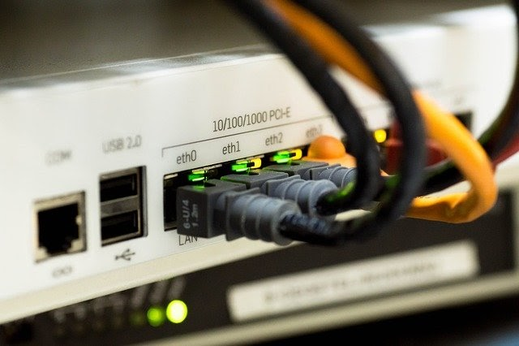
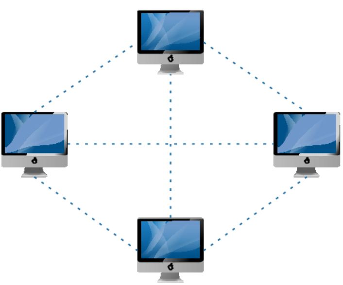

Introduction to Computer Networking
1. Introduction
Basically a group of computers linked to each other so that they may communicate with each other and/or share their resources, data and applications. To connect multiple networks with each other, routers are used which operate on routing protocols. A computer network is a group of computer systems and other computing hardware devices that are linked together through communication channels to facilitate communication and resource-sharing among a wide range of users. Networks are commonly categorized based on their characteristics.
2. Types of Networks
TA computer network can be categorized by their size. A computer network is mainly of four types:

LAN(Local Area Network)
This is the abbreviation for Local Area Network which is when there are multiple computers and peripheral devices connected to a campus or in an office or other room. They are sharing a common connection that has 10-100 Mbps data transmission speed and are connected by Ethernet cables, usually running on high-speed internet connection. LAN computer terminals may be physically connected using cables or setup wireless, thus called WLAN. LAN is less expensive than WAN or MAN.
PAN(Personal Area Network)
Personal Area Network is a network arranged within an individual person, typically within a range of 10 meters. Personal Area Network is used for connecting the computer devices of personal use is known as Personal Area Network. Thomas Zimmerman was the first research scientist to bring the idea of the Personal Area Network. Personal Area Network covers an area of 30 feet. Personal computer devices that are used to develop the personal area network are the laptop, mobile phones, media player and play stations.
MAN(Metropolitan Area Network)
MAN is the abbreviation for Metropolitan Area Network and bigger than LAN network. It connects computer users that are in a specific geographical area. An example of MAN is your cable television or a large university. MAN’s data transmission speed is 5-10Mbps, which is faster and more expensive than LAN but slower and smaller than WAN.
WAN(Wide Area Network
This is the abbreviation for Wide Area Network and is the biggest network which can interconnect networks around the world. Companies such as Microsoft or other worldwide organizations utilize WAN connection between their various branches by communicating via microwave satellites. WAN has a data transmission speed of 256Kbps to 2Mbps, offering a faster speed than LAN or MAN. WAN is used to connect LANs that are not in the same area and is more expensive than LAN or MAN.
3. Difference between Client Server and Peer to Peer
Peer to peer and client server are two network types. In a client server network, multiple clients connect to a server. The clients require services, and the server provides required services. On the other hand, in a peer to peer network, there are no specific clients or servers. Instead, all the nodes can act as clients or servers. In other words, each node can request for services and provides services.
Client Server
In a client server network, there are clients and servers. A client can be a device or a program. It helps the end users to access the web. Some examples of clients are desktop, laptops, smartphones, web browsers, etc. A server is a device or a program that responds to the clients with the services. It provides files, databases, web pages, shared resources according to its type.

Peer to Peer
In a peer to peer network, there is no specific client or a server. A device can send and receive data directly with each other. Each node can either be a client or a server. It can request or provide services accordingly. A node is also called a peer.
4. Application of Networks
Computer networks allow organizations having units which are placed apart from each other, to share information in a very effective manner. Programs and software in any computer can be accessed by other computers linked to the network. It also allows sharing of hardware equipment, like printers and scanners among varied users. Through computer networks, users can retrieve remote information on a variety of topics. The information is stored in remote databases to which the user gains access through information systems like the World Wide Web.